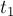
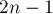
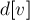
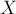
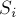
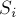

MAXimal
добавлено: 10 Aug 2008 19:50
редактировано: 2 May 2012 22:52
Содержание [скрыть]
Суффиксный автомат
Суффиксный автомат (или ориентированный ациклический граф слов) — это мощная структура данных, которая позволяет решать множество строковых задач.
Например, с помощью суффиксного автомата можно искать все вхождения одной строки в другую, или подсчитывать количество различных подстрок данной строки — обе задачи он позволяет решать за линейное время.
На интуитивном уровне, суффиксный автомат можно понимать как сжатую информацию обо всех подстроках данной строки. Впечатляющим фактом является то, что суффиксный автомат содержит всю информацию в настолько сжатом виде, что для строки длины  он требует лишь
он требует лишь  памяти. Более того, он может быть построен также за время (если мы считаем размер алфавита
памяти. Более того, он может быть построен также за время (если мы считаем размер алфавита  константой; в противном случае — за время
константой; в противном случае — за время  ).
).
Исторически, впервые линейность размера суффиксного автомата была открыта в 1983 г. Blumer и др., а в 1985 — 1986 гг. были представлены первые алгоритмы его построения за линейное время (Crochemore, Blumer и др.). Более подробно — см. список литературы в конце статьи.
На английском языке суффиксный автомат называется "suffix automaton" (во множественном числе — "suffix automata"), а ориентированный ациклический граф слов — "directed acyclic word graph" (или просто "DAWG").
Определение суффиксного автомата
Определение. Суффиксным автоматом для данной строки  называется такой минимальный детерминированный конечный автомат, который принимает все суффиксы строки .
называется такой минимальный детерминированный конечный автомат, который принимает все суффиксы строки .
Расшифруем это определение.
- Суффиксный автомат представляет собой ориентированный ациклический граф, в котором вершины называются состояниями, а дуги графа — это переходы между этими состояниями.
- Одно из состояний называется начальным состоянием, и оно должно быть истоком графа (т.е. из него достижимы все остальные состояния).
- Каждый переход в автомате — это дуга, помеченная некоторым символом. Все переходы, исходящие из какого-либо состояния, обязаны иметь разные метки. (С другой стороны, из состояния может не быть переходов по каким-либо символам.)
- Одно или несколько состояний помечены как терминальные состояния. Если мы пройдём из начального состояния по любому пути до какого-либо терминального состояния, и выпишем при этом метки всех пройденных дуг, то получится строка, которая обязана быть одним из суффиксов строки .
- Суффиксный автомат содержит минимальное число вершин среди всех автоматов, удовлетворяющих описанным выше условиям. (Минимальность числа переходов не требуется, т.к. при условии минимальности числа состояний в автомате не может быть "лишних" путей — иначе это нарушило бы предыдущее свойство.)
Простейшие свойства суффиксного автомата
Простейшим, и вместе с тем важнейшим свойством суффиксного автомата является то, что он содержит в себе информацию обо всех подстроках строки . А именно, любой путь из начального состояния , если мы выпишем метки дуг вдоль этого пути, образует обязательно подстроку строки . И наоборот, любой подстроке строки соответствует некоторый путь, начинающийся в начальном состоянии .
В целях упрощения объяснений, мы будем говорить, что подстроке соответствует тот путь из начального состояния, метки вдоль которого образуют эту подстроку. И наоборот, мы будем говорить, что любому пути соответствует та строка, которую образуют метки его дуг.
В каждое состояние суффиксного автомата ведёт один или несколько путей из начального состояния. Будем говорить, что состоянию соответствует набор строк, соответствующих всем этим путям.
Примеры построенных суффиксных автоматов
Приведём примеры суффиксных автоматов, построенных для нескольких простых строк.
Начальное состояние мы будем обозначать здесь через  , а терминальные состояния — отмечать звёздочкой.
, а терминальные состояния — отмечать звёздочкой.
Для строки :

Для строки :
Для строки :
Для строки :
Для строки :
Для строки :
Для строки :
Алгоритм построения суффиксного автомата за линейное время
Перед тем, как перейти непосредственно к описанию алгоритма построения, надо ввести несколько новых понятий и доказать простые, но очень важные для понимания суффиксного автомата леммы.
Позиции окончаний , их свойства и связь с суффиксным автоматом
Рассмотрим любую непустую подстроку  строки . Тогда назовём множеством окончаний множество всех позиций в строке , в которых оканчиваются вхождения строки .
строки . Тогда назовём множеством окончаний множество всех позиций в строке , в которых оканчиваются вхождения строки .
Мы будем называть две подстроки  и  -эквивалентными, если их множества окончаний совпадают:
-эквивалентными, если их множества окончаний совпадают:  . Таким образом, все непустые подстроки строки можно разбить на несколько классов эквивалентности соответственно их множествам .
. Таким образом, все непустые подстроки строки можно разбить на несколько классов эквивалентности соответственно их множествам .
Оказывается, что в суффиксном автомате -эквивалентным подстрокам соответствует одно и то же состояние. Иными словами, число состояний в суффиксном автомате равно количеству классов -эквивалентности среди всех подстрок, плюс одно начальное состояние. Каждому состоянию суффиксного автомата соответствуют одна или несколько подстрок, имеющих одно и то же значение .
Это утверждение мы примем как аксиому, и опишем алгоритм построения суффиксного автомата, исходя из этого предположения — как мы затем увидим, все требуемые свойства суффиксного автомата, кроме минимальности, будут выполнены. (А минимальность следует из теоремы Nerode — см. список литературы.)
Приведём также несколько простых, но важных утверждений касательно значений .
Лемма 1. Две непустые подстроки  и
и  () являются -эквивалентными тогда и только тогда, когда строка встречается в строке только в виде суффикса строки .
() являются -эквивалентными тогда и только тогда, когда строка встречается в строке только в виде суффикса строки .
Доказательство практически очевидно. В одну сторону: если и имеют одинаковые позиции окончаний вхождения, то является суффиксом , и она присутствует в только в виде суффикса . В обратную сторону: если является суффиксом и входит только как этот суффикс, то их значения равны по определению.
Лемма 2. Рассмотрим две непустые подстроки и (). Тогда их множества либо не пересекаются, либо целиком содержится в , причём это зависит от того, является суффиксом или нет:
Доказательство. Предположим, что множества и имеют хотя бы один общий элемент. Тогда это означает, что строки и оканчиваются в одном и том же месте, т.е. — суффикс . Но тогда каждое вхождение строки содержит на своём конце вхождение строки , что и означает, что его множество целиком вкладывается в множество .
Лемма 3. Рассмотрим некоторый класс -эквивалентности. Отсортируем все подстроки, входящие в этот класс, по невозрастанию длины. Тогда в получившейся последовательности каждая подстрока будет на единицу короче предыдущей, и при этом являться суффиксом предыдущей. Иными словами, подстроки, входящие в один класс эквивалентности, на самом деле являются суффиксами друг друга, и принимают всевозможные различные длины в некотором отрезке .
Доказательство.
Зафиксируем некоторый класс -эквивалентности. Если он содержит только одну строку, то корректность леммы очевидна. Пусть теперь количество строк больше одной.
Согласно лемме 1, две различные -эквивалентные строки всегда таковы, что одна является собственным суффиксом другой. Следовательно, в одном классе -эквивалентности не может быть строк одинаковой длины.
Обозначим через длиннейшую, а через — кратчайшую строку в данном классе эквивалентности. Согласно лемме 1, строка является собственным суффиксом строки . Рассмотрим теперь любой суффикс строки с длиной в отрезке , и покажем, что он содержится в этом же классе эквивалентности. В самом деле, этот суффикс может входить в только в виде суффикса строки (поскольку более короткий суффикс входит только в виде суффикса строки ). Следовательно, согласно лемме 1, этот суффикс -эквивалентен строке , что и требовалось доказать.
Суффиксные ссылки
Рассмотрим некоторое состояние автомата . Как мы теперь знаем, состоянию  соответствует некоторый класс строк с одинаковыми значениями , причём если мы обозначим через длиннейшую из этих строк, то все остальные будут суффиксами .
соответствует некоторый класс строк с одинаковыми значениями , причём если мы обозначим через длиннейшую из этих строк, то все остальные будут суффиксами .
Также мы знаем, что первые несколько суффиксов строки (если мы рассматриваем суффиксы в порядке убывания их длины) содержатся в том же самом классе эквивалентности, а все остальные суффиксы (как минимум, пустой суффикс) — в каких-то других классах. Обозначим через первый такой суффикс — в него мы и проведём суффиксную ссылку.
Иными словами, суффиксная ссылка ведёт в такое состояние, которому соответствует наидлиннейший суффикс строки , находящийся в другом классе -эквивалентности.
Здесь мы считаем, что начальному состоянию соответствует отдельный класс эквивалентности (содержащий только пустую строку), и полагаем .
Лемма 4. Суффиксные ссылки образуют дерево, корнем которого является начальное состояние .
Доказательство. Рассмотрим произвольное состояние . Суффиксная ссылка ведёт из него в состояние, которому соответствуют строки строго меньшей длины (это следует из определения суффиксной ссылки и из леммы 3). Следовательно, двигаясь по суффиксным ссылкам, мы рано или поздно придём из состояния в начальное состояние , которому соответствует пустая строка.
Лемма 5. Если мы построим из всех имеющихся множеств дерево (по принципу "множество-родитель содержит как подмножества всех своих детей"), то оно будет совпадать по структуре с деревом суффиксных ссылок.
Доказательство.
То, что из множеств можно построить дерево, следует из леммы 2 (о том, что любые два множества либо не пересекаются, либо одно содержится в другом).
Рассмотрим теперь произвольное состояние и его суффиксную ссылку . Из определения суффиксной ссылки и из леммы 2 следует:
что вкупе с предыдущей леммой и доказывает наше утверждение: дерево суффиксных ссылок по сути своей есть дерево вкладывающихся множеств .
Приведём пример дерева суффиксных ссылок в суффиксном автомате, построенном для строки :

Промежуточный итог
Перед тем, как приступить к самому алгоритму, систематизируем накопленные выше знания, и введём пару вспомогательных обозначений.
- Множество подстрок строки можно разбить на классы эквивалентности согласно их множествам окончания .
- Суффиксный автомат состоит из начального состояния , а также по одному состоянию на каждый класс -эквивалентности.
- Каждому состоянию соответствует одна или несколько строк. Обозначим через
 длиннейшую из таких строк, через её длину. Обозначим через кратчайшую из таких строк, а её длину через .
длиннейшую из таких строк, через её длину. Обозначим через кратчайшую из таких строк, а её длину через .Тогда все строки, соответствующие этому состоянию, являются различными суффиксами строки
и имеют всевозможные длины в отрезке . - Для каждого состояния определена суффиксная ссылка, ведущая в такое состояние, которое соответствует суффиксу строки длины . Суффиксные ссылки образуют дерево с корнем в , причём это дерево, по сути, является деревом отношений включения между множествами .
- Таким образом, для выражается с помощью суффиксной ссылки как:
- Если мы стартуем из произвольного состояния и будем идти по суффиксным ссылкам, то рано или поздно дойдём до начального состояния . При этом у нас получится последовательность непересекающихся отрезков , которые в объединении дадут один сплошной отрезок.
Алгоритм построения суффиксного автомата за линейное время
Приступим к описанию самого алгоритма. Алгоритм будет онлайновым, т.е. будет добавлять по одному символу строки , перестраивая соответствующим образом текущий автомат.
Чтобы достичь линейного потребления памяти, в каждом состоянии мы будем хранить только значение  , и список переходов из этого состояния. Метки терминальных состояний мы поддерживать не будем (мы покажем, как расставить эти метки после построения суффиксного автомата, если имеется необходимость в них).
, и список переходов из этого состояния. Метки терминальных состояний мы поддерживать не будем (мы покажем, как расставить эти метки после построения суффиксного автомата, если имеется необходимость в них).
Изначально автомат состоит из единственного состояния , которое мы условимся считать нулевым состоянием (остальные состояния будут получать номера ). Присвоим этому состоянию , а значению присвоим для удобства  (означающее ссылку на фиктивное, несуществующее состояние).
(означающее ссылку на фиктивное, несуществующее состояние).
Соответственно, вся задача теперь сводится к тому, чтобы реализовать обработку добавления одного символа  в конец текущей строки. Опишем этот процесс:
в конец текущей строки. Опишем этот процесс:
- Пусть — это состояние, соответствующее всей текущей строке до добавления символа . (Изначально , а после добавления каждого символа мы будем менять значение .)
- Создадим новое состояние , проставив ему . Значение пока считаем неопределённым.
- Сделаем такой цикл: изначально мы стоим в состоянии ; если из него нет перехода по букве , то добавляем этот переход по букве в состояние , и затем переходим по суффиксной ссылке, снова проверяя — если нет перехода, то добавляем. Если в какой-то момент случится, что такой переход уже есть, то останавливаемся — и обозначим через
 номер состояния, на котором это произошло.
номер состояния, на котором это произошло. - Если ни разу не случилось, что переход по букве уже имелся, и мы так и дошли до фиктивного состояния (в которое мы попали по суффиксной ссылке из начального состояния ), то мы можем просто присвоить и выйти.
- Допустим теперь, что мы остановились на некотором состоянии , из которого уже был переход по букве . Обозначим через
 то состояние, куда ведёт этот имеющийся переход.
то состояние, куда ведёт этот имеющийся переход. - Теперь у нас два случая в зависимости от того, или нет.
- Если , то мы можем просто присвоить и выйти.
- В противном случае, всё несколько сложнее. Необходимо произвести "клонирование" состояния : создать новое состояние , скопировав в него все данные из вершины (суффиксную ссылку, переходы), за исключением значения : надо присвоить .
После клонирования мы проводим суффиксную ссылку из в это состояние , также перенаправляем суффиксную ссылку из
в .Наконец, последнее, что мы должны сделать — это пройтись от состояния
по суффиксным ссылкам, и для каждого очередного состояния проверять: если имелся переход по букве в состояние , то перенаправлять его в состояние (а если нет, то останавливаться). - В любом случае, чем бы ни закончилось выполнение этой процедуры, мы в конце обновляем значение , присваивая ему .
Если нам также нужно знать, какие вершины являются терминальными, а какие — нет, то мы можем найти все терминальные вершины после построения суффиксного автомата для всей строки. Для этого рассмотрим состояние, соответствующее всей строке (оно, очевидно, у нас сохранено в переменной ), и будем идти по его суффиксным ссылкам, пока не дойдём до начального состояния, и помечать каждое пройденное состояние как терминальное. Легко понять, что тем самым мы пометим состояния, соответствующие всем суффиксам строки , что нам и требовалось.
В следующем разделе мы подробно рассмотрим каждый шаг алгоритма и покажем его корректность.
Здесь же лишь отметим, что из алгоритма видно, что добавление одного символа приводит к добавлению одного или двух состояний в автомат. Таким образом, линейность числа состояний очевидна.
Линейность числа переходов, да и вообще линейное время работы алгоритма менее понятны, и они будут доказаны ниже, после доказательства корректности алгоритма.
Доказательство корректности алгоритма
- Назовём переход
 сплошным, если . В противном случае, т.е. когда , переход будем называть несплошным.
сплошным, если . В противном случае, т.е. когда , переход будем называть несплошным.Как можно увидеть из описания алгоритма, сплошные и несплошные переходы приводят к разным ветвям алгоритма. Сплошные переходы называются так потому, что, появившись впервые, они больше никогда не будут меняться. В противоположность им, несплошные переходы могут измениться при добавлении новых букв к строке (измениться может конец дуги-перехода).
- Во избежание неоднозначностей, под строкой мы будем подразумевать строку, для которой был построен суффиксный автомат до добавления текущего символа .
- Алгоритм начинается с того, что мы создаём новое состояние , которому будет соответствовать вся строка
 . Понятно, почему мы обязаны создать новое состояние — т.к. вместе с добавлением нового символа возникает новый класс эквивалентности — это класс строк, оканчивающихся на добавляемом символе .
. Понятно, почему мы обязаны создать новое состояние — т.к. вместе с добавлением нового символа возникает новый класс эквивалентности — это класс строк, оканчивающихся на добавляемом символе . - После создания нового состояния алгоритм проходится по суффиксным ссылкам, начиная с состояния, соответствующего всей строке , и пытается добавить переход по символу в состояние . Тем самым, мы приписываем к каждому суффиксу строки символ . Но добавлять новые переходы мы можем только в том случае, если они не будут конфликтовать с уже имеющимися, поэтому, как только мы встретим уже имеющийся переход по символу , мы сразу же обязаны остановиться.
- Самый простой случай — если мы так и дошли до фиктивного состояния , добавив везде по новому переходу вдоль символа . Это означает, что символ в строке ранее не встречался. Мы успешно добавили все переходы, осталось только проставить суффиксную ссылку у состояния — она, очевидно, должна быть равна
 , поскольку состоянию в данном случае соответствуют все суффиксы строки .
, поскольку состоянию в данном случае соответствуют все суффиксы строки . - Второй случай — когда мы наткнулись на уже имеющийся переход . Это означает, что мы пытались добавить в автомат строку
 (где
(где  — некоторый суффикс строки , имеющий длину
— некоторый суффикс строки , имеющий длину  ), а эта строка уже была ранее добавлена в автомат (т.е. строка уже входит как подстрока в строку ). Поскольку мы предполагаем, что автомат для строки построен корректно, то новых переходов мы больше добавлять не должны.
), а эта строка уже была ранее добавлена в автомат (т.е. строка уже входит как подстрока в строку ). Поскольку мы предполагаем, что автомат для строки построен корректно, то новых переходов мы больше добавлять не должны.Однако возникает сложность с тем, куда вести суффиксную ссылку из состояния . Нам требуется провести суффиксную ссылку в такое состояние, в котором длиннейшей строкой будет являться как раз эта самая
, т.е. для этого состояния должен быть равен  . Однако такого состояния могло и не существовать: в таком случае нам надо произвести "расщепление" состояния.
. Однако такого состояния могло и не существовать: в таком случае нам надо произвести "расщепление" состояния. - Итак, по одному из возможных сценариев, переход оказался сплошным, т.е. . В этом случае всё просто, никакого расщепления производить не надо, и мы просто проводим суффиксную ссылку из состояния в состояние .
- Другой, более сложный вариант — когда переход несплошной, т.е.
 . Это означает, что состоянию соответствует не только нужная нам подстрока длины , но также и подстроки большей длины. Нам ничего не остаётся, кроме как произвести "расщепление" состояния : разбить отрезок строк, соответствующих ей, на два подотрезка, так что первый будет заканчиваться как раз длиной .
. Это означает, что состоянию соответствует не только нужная нам подстрока длины , но также и подстроки большей длины. Нам ничего не остаётся, кроме как произвести "расщепление" состояния : разбить отрезок строк, соответствующих ей, на два подотрезка, так что первый будет заканчиваться как раз длиной .Как производить это расщепление? Мы "клонируем" состояние
, делая его копию с параметром . Мы копируем в из все переходы, поскольку мы не хотим никоим образом менять пути, проходившие через . Суффиксную ссылку из мы ведём туда, куда вела старая суффиксная ссылка из , а ссылку из направляем в .После клонирования мы проводим суффиксную ссылку из в — то, ради чего мы и производили клонирование.
Остался последний шаг — перенаправить некоторые входящие в
переходы, перенаправив их на . Какие именно входящие переходы надо перенаправить? Достаточно перенаправить только переходы, соответствующие всем суффиксам строки , т.е. нам надо продолжить двигаться по суффиксным ссылкам, начиная с вершины , и до тех пор, пока мы не дойдём до фиктивного состояния или не дойдём до состояния, переход из которого ведёт в состояние, отличное от .
Доказательство линейного числа операций
Во-первых, сразу оговоримся, что мы считаем размер алфавита константой. Если это не так, то говорить о линейном времени работы не получится: список переходов из одной вершины надо хранить в виде сбалансированного дерева, позволяющего быстро производить операции поиска по ключу и добавления ключа. Следовательно, если мы обозначим через размер алфавита, то асимптотика алгоритма составит при  памяти. Впрочем, если алфавит достаточно мал, то можно, пожертвовав памятью, избежать сбалансированных списков, а хранить переходы в каждой вершине в виде массива длины (для быстрого поиска по ключу) и динамического списка (для быстрого обхода всех имеющихся ключей). Тем самым мы достигнем во времени работы алгоритма, но ценой
памяти. Впрочем, если алфавит достаточно мал, то можно, пожертвовав памятью, избежать сбалансированных списков, а хранить переходы в каждой вершине в виде массива длины (для быстрого поиска по ключу) и динамического списка (для быстрого обхода всех имеющихся ключей). Тем самым мы достигнем во времени работы алгоритма, но ценой  потребления памяти.
потребления памяти.
Итак, мы будем считать размер алфавита константным, т.е. каждая операция поиска перехода по символу, добавления перехода, поиск следующего перехода — все эти операции мы считаем работающими за  .
.
Если мы рассмотрим все части алгоритма, то он содержит три места, линейная асимптотика которых не очевидна:
- Первое место — это проход по суффиксным ссылкам от состояния с добавлением рёбер по символу .
- Второе место — копирование переходов при клонировании состояния в новое состояние .
- Третье место — перенаправление переходов, ведущих в , на .
Воспользуемся известным фактом, что размер суффиксного автомата (как по числу состояний, так и по числу переходов) линеен. (Доказательством линейности по числу состояний является сам алгоритм, а доказательство линейности по числу переходов мы приведём ниже, после реализации алгоритма.).
Тогда очевидна линейная суммарная асимптотика первого и второго места: ведь каждая операция здесь добавляет в автомат один новый переход.
Осталось оценить суммарную асимптотику в третьем месте — в том, где мы перенаправляем переходы, ведущие в , на . Обозначим  . Это суффикс строки , и с каждой итерацией его длина убывает — а, значит, и позиция как суффикса строки монотонно возрастает с каждой итерацией. При этом, если перед первой итерацией цикла соответствующая строка была на глубине () от (если считать глубиной число суффиксных ссылок, которые надо пройти), то после последней итерации строка станет
. Это суффикс строки , и с каждой итерацией его длина убывает — а, значит, и позиция как суффикса строки монотонно возрастает с каждой итерацией. При этом, если перед первой итерацией цикла соответствующая строка была на глубине () от (если считать глубиной число суффиксных ссылок, которые надо пройти), то после последней итерации строка станет  -ой суффиксной ссылкой на пути от (которое станет новым значением ).
-ой суффиксной ссылкой на пути от (которое станет новым значением ).
Таким образом, каждая итерация этого цикла приводит к тому, что позиция строки как суффикса всей текущей строки будет монотонно увеличиваться. Следовательно, всего этот цикл не мог отработать более итераций, что и требовалось доказать.
(Стоит заметить, что аналогичные аргументы можно использовать и для доказательства линейности работы первого места, вместо ссылки на доказательство линейности числа состояний.)
Реализация алгоритма
Вначале опишем структуру данных, которая будет хранить всю информацию о конкретном переходе (, , список переходов). При необходимости сюда можно добавить флаг терминальности, а также другую требуемую информацию. Список переходов мы храним в виде стандартного контейнера  , что позволяет достичь суммарно памяти и времени на обработку всей строки.
, что позволяет достичь суммарно памяти и времени на обработку всей строки.
struct state { int len, link; map<char,int> next; };
Сам суффиксный автомат будем хранить в виде массива этих структур . Как доказывается в следующем разделе, если — это максимально возможная в программе длина строки, то достаточно завести память под состояний. Также мы храним переменную — состояние, соответствующее всей строке на данный момент.
const int MAXLEN = 100000; state st[MAXLEN*2]; int sz, last;
Приведём функцию, инициализирующую суффиксный автомат (создающую автомат с единственным начальным состоянием):
void sa_init() { sz = last = 0; st[0].len = 0; st[0].link = -1; ++sz; /* // этот код нужен, только если автомат строится много раз для разных строк: for (int i=0; i<MAXLEN*2; ++i) st[i].next.clear(); */ }
Наконец, приведём реализацию основной функции — которая добавляет очередной символ в конец текущей строки, перестраивая соответствующим образом автомат:
void sa_extend (char c) { int cur = sz++; st[cur].len = st[last].len + 1; int p; for (p=last; p!=-1 && !st[p].next.count(c); p=st[p].link) st[p].next[c] = cur; if (p == -1) st[cur].link = 0; else { int q = st[p].next[c]; if (st[p].len + 1 == st[q].len) st[cur].link = q; else { int clone = sz++; st[clone].len = st[p].len + 1; st[clone].next = st[q].next; st[clone].link = st[q].link; for (; p!=-1 && st[p].next[c]==q; p=st[p].link) st[p].next[c] = clone; st[q].link = st[cur].link = clone; } } last = cur; }
Как уже упоминалось выше, если пожертвовать памятью (до , где — размер алфавита), то можно достичь времени построения автомата даже для любых — но для этого придётся в каждом состоянии хранить массив размера (для быстрого поиска перехода по нужной букве) и список всех переходов (для быстрого обхода или копирования всех переходов).
Дополнительные свойства суффиксного автомата
Число состояний
Число состояний в суффиксном автомате, построенном для строки длины , не превышает  (для  ).
).
Доказательством этого является описанный выше алгоритм (поскольку изначально автомат состоит из одного начального состояния, на первом и втором шагах добавляется ровно по одному состоянию, а на каждом из остальных  шагах могло добавляться по две вершины из-за расщепления состояния).
шагах могло добавляться по две вершины из-за расщепления состояния).
Однако эту оценку легко показать и без знания алгоритма. Вспомним о том, что число состояний равно количеству различных значений множеств . Кроме того, эти множества образуют дерево по принципу "вершина-родитель содержит в себе как подмножества всех детей". Рассмотрим это дерево, и немного преобразуем его: пока в нём есть внутренняя вершина с одним сыном, то это означает, что этого сына не содержит как минимум одно число из родителя; тогда создадим виртуальную вершину с , равным этому числу, и привесим этого сына к родителю. В итоге мы получим дерево, в котором каждая внутренняя вершина имеет степень больше единицы, а число листьев не превосходит . Следовательно, всего в таком дереве не более вершины.
Итак, мы показали эту оценку независимо, без знания алгоритма.
Интересно заметить, что эта оценка неулучшаема, т.е. существует тест, на котором она достигается. Этот тест выглядит таким образом:
При обработке этой строки на каждой итерации, начиная с третьей, будет происходить расщепление состояния, и, тем самым, будет достигаться оценка .
Число переходов
Число переходов в суффиксном автомате, построенном для строки длины , не превышает (для ).
Докажем это.
Оценим число сплошных переходов. Рассмотрим остовное дерево из длиннейших путей в автомате, начинающихся в состоянии . Этот остов будет состоять только из сплошных рёбер, а, значит, их количество на единицу меньше числа состояний, т.е. не превосходит  .
.
Оценим теперь число несплошных переходов. Рассмотрим каждый несплошной переход; пусть текущий переход — это переход по символу . Поставим ему в соответствие строку , где строка соответствует длиннейшему пути из начального состояния в , а — длиннейшему пути из в какое-либо терминальное состояние. С одной стороны, все такие строки для всех несплошных переходов будут различными (поскольку строки и образованы только сплошными переходами). С другой стороны, каждая из таких строк , по определению терминального состояния, будет суффиксом всей строки . Поскольку непустых суффиксов у строки всего штук, и к тому же вся строка среди этих строк не могла содержаться (т.к. всей строке соответствует путь из сплошных рёбер), то общее число несплошных переходов не превосходит  .
.
Складывая эти две оценки, мы получаем оценку . Однако, вспоминая, что максимальное число состояний достигается только на тесте вида , и на нём оценка явно не достигается, получаем окончательную оценку , что и требовалось доказать.
Интересно отметить, что также существует тест, на котором эта оценка достигается:
Связь с суффиксным деревом. Построение суффиксного дерева по суффиксному автомату и наоборот
Докажем две теоремы, устанавливающие взаимную связь между суффиксным автоматом и суффиксным деревом.
Сразу оговоримся, что мы считаем, что входная строка такова, что каждый суффикс имеет собственную вершину в суффиксном дереве (поскольку для произвольных строк это, вообще говоря, неверно: например, для строки ). Обычно этого добиваются путём приписывания в конец строки какого-нибудь особого символа (обычно обозначаемого через знак доллара).
Для удобства введём обозначения: — это строка , записанная в обратном порядке,  — это суффиксный автомат, построенный для строки , — это суффиксное дерево строки .
— это суффиксный автомат, построенный для строки , — это суффиксное дерево строки .
Введём понятие расширяющей ссылки: зафиксируем вершину суффиксного дерева и символ ; тогда расширяющая ссылка ведёт в вершину дерева, соответствующую строке (если этот путь оканчивается посередине ребра, то проведём ссылку в нижний конец этого ребра); если такого пути вообще нет в дереве, то расширяющая ссылка не определена. В некотором смысле, расширяющие ссылки противоположны суффиксным ссылкам.
Теорема 1. Дерево, образованное суффиксными ссылками в , является суффиксным деревом .
Теорема 2. — это граф расширяющих ссылок суффиксного дерева . Кроме того, сплошные рёбра в — это инвертированные суффиксные ссылки в .
Эти две теоремы позволяют по одной из структур (суффиксному дереву или суффиксному автомату) построить другую за время — эти два простых алгоритма будут рассмотрены нами ниже в теоремах 3 и 4.
В целях наглядности, приведём суффиксный автомат с его деревом суффиксных ссылок и соответствующее суффиксное дерево для инвертированной строки. Для примера возьмём строку .
и его дерево суффиксных ссылок (для наглядности мы подписываем каждое состояние его -строкой):
:
Лемма. Следующие три утверждения эквивалентны для любых двух подстрок и :
- в строке
- в строке
 и
и  лежат на одном и том же пути из корня в суффиксном дереве .
лежат на одном и том же пути из корня в суффиксном дереве .
Доказательство её довольно очевидно: если начала вхождений двух строк совпадают, то одна строка является префиксом другой, а, значит, одна строка лежит в суффиксном дереве на пути другой строки.
Доказательство теоремы 1.
Состояния суффиксного автомата соответствуют вершинам суффиксного дерева.
Рассмотрим произвольную суффиксную ссылку . Согласно определению суффиксной ссылки, является суффиксом , причём среди всех таких  выбирается тот, у которого максимально.
выбирается тот, у которого максимально.
В терминах инвертированной строки это означает, что суффиксная ссылка ведёт в такой длиннейший префикс строки, соответствующей состоянию , чтобы этому префиксу соответствовало отдельное состояние . Иными словами, суффиксная ссылка ведёт в предка вершины в суффиксном дереве, что и требовалось доказать.
Доказательство теоремы 2.
Состояния суффиксного автомата соответствуют вершинам суффиксного дерева.
Рассмотрим произвольный переход в суффиксном автомате . Наличие этого перехода означает, что — это такое состояние, класс эквивалентности которого содержит подстроку . В инвертированной строке это означает, что это такое состояние, которому соответствует подстрока, от которой (в тексте ) совпадает с от подстроки .
Это как раз и означает, что:
Первая часть теоремы доказана, осталось доказать вторую часть: что все сплошные переходы в автомате соответствуют суффиксным ссылкам в дереве. Сплошной переход отличается от несплошного тем, что , т.е. после приписывания символа мы попали в состояние со строкой, максимальной из класса эквивалентности этого состояния. Это означает, что при вычислении соответствующей расширяющей ссылки мы сразу попали в вершину дерева, а не спускались вниз до ближайшей вершины дерева. Таким образом, приписав один символ в начало, мы попали в другую вершину дерева — значит, если это и есть инвертированная суффиксная ссылка в дереве.
Теорема полностью доказана.
Теорема 3. Имея суффиксный автомат , можно за время построить суффиксное дерево .
Теорема 4. Имея суффиксное дерево , можно за время построить суффиксный автомат .
Доказательство теоремы 3.
Суффиксное дерево будет содержать столько же вершин, сколько состояний в , причём вершине дерева, получившейся из состояния автомата, соответствует строка длины .
Согласно теореме 1, рёбра в дереве образуются как инвертированные суффиксные ссылки, и дуговые метки можно найти, исходя из разности состояний, и дополнительно зная для каждого состояния автомата один любой элемент его множества (этот один элемент множества можно поддерживать при построении автомата).
Суффиксные ссылки в дереве мы можем построить согласно теореме 2: для этого достаточно просмотреть все сплошные переходы в автомате, и для каждого такого перехода  добавить ссылку .
добавить ссылку .
Таким образом, за время мы можем построить суффиксное дерево вместе с суффиксными ссылками в нём.
(Если мы считаем размер алфавита не константой, то на всё перестроение потребуется время .)
Доказательство теоремы 4.
Суффиксный автомат будет содержать столько же состояний, сколько вершин в . У каждого состояния его длиннейшая строка будет соответствовать инвертированному пути из корня дерева до вершины .
Согласно теореме 2, чтобы построить все переходы в суффиксном автомате, нам надо найти все расширяющие ссылки .
Во-первых, заметим, что часть этих расширяющих ссылок получаются непосредственно из суффиксных ссылок в дереве. В самом деле, если для любой вершины мы рассмотрим её суффиксную ссылку , то это означает, что надо провести расширяющую ссылку из в по первому символу строки, соответствующей вершине .
Однако так мы найдём не все расширяющие ссылки. Дополнительно надо пройтись по суффиксному дереву от листьев до корня, и для каждой вершины просмотреть всех её сыновей, для каждого сына просмотреть все расширяющие ссылки , и скопировать эту ссылку в вершину , если по этому символу ссылка из вершины ещё не была найдена:
Этот процесс отработает за время , если мы считаем размер алфавита константным.
Наконец, осталось построить суффиксные ссылки в автомате, однако, согласно теореме 1, эти суффиксные ссылки получаются просто как рёбра суффиксного дерева .
Таким образом, описанный алгоритм за время строит суффиксный автомат по суффиксному дереву для инвертированной строки.
(Если же мы считаем, что размер алфавита — также переменная величина, то асимптотика увеличится до .)
Применения при решении задач
Ниже мы рассмотрим, какие задачи можно решать с помощью суффиксного автомата.
Мы для простоты будем считать размер алфавита константой, что позволит нам считать асимптотику построения суффиксного автомата и прохода по нему константными.
Проверка вхождения
Условие. Дан текст  , и поступают запросы в виде: дана строка
, и поступают запросы в виде: дана строка  , требуется проверить, входит или нет строка в текст как подстрока.
, требуется проверить, входит или нет строка в текст как подстрока.
Асимптотика. Препроцессинг и на один запрос.
Решение. Построим суффиксный автомат по тексту за время .
Как теперь отвечать на один запрос. Пусть текущее состояние — это переменная , изначально она равна начальному состоянию . Будем идти по символам строки , соответствующим образом делая переход из текущего состояния в новое состояние. Если в какой-то момент случилось, что перехода из текущего состояния по нужному символу не оказалось — то ответ на запрос "нет". Если же мы смогли обработать всю строку , то ответ на запрос "да".
Понятно, что это будет работать за время . Более того, алгоритм фактически ищет длину наидлиннейшего префикса , встречающегося в тексте — и если входные образцы таковы, что эти длины маленькие, то и алгоритм будет работать значительно быстрее, не обрабатывая всю строку целиком.
Количество различных подстрок
Условие. Дана строка  . Требуется узнать количество различных её подстрок.
. Требуется узнать количество различных её подстрок.
Асимптотика. .
Решение. Построим суффиксный автомат по строке .
В суффиксном автомате любой подстроке строки соответствует какой-то путь в автомате. Поскольку повторяющихся строк в автомате быть не может, то ответ на задачу — это количество различных путей в автомате, начинающихся в начальной вершине .
Учитывая, что суффиксный автомат представляет собой ациклический граф, количество различных путей можно считать в нём с помощью динамического программирования.
А именно, пусть  — это количество различных путей, начинающихся с состояния (включая путь длины ноль). Тогда верно:
т.е. можно выразить как сумму ответов по всевозможным переходам из состояния .
Ответом на задачу будет значение (единица отнимается, чтобы не учитывать пустую подстроку).
Суммарная длина различных подстрок
Условие. Дана строка . Требуется узнать суммарную длину всех различных её подстрок.
Асимптотика. .
Решение. Решение задачи аналогично предыдущей, только теперь надо считать в динамике две величины: количество различных подстрок и их суммарную длину .
Как считать , описано в предыдущей задаче, а величину можно вычислить таким образом:
т.е. мы берём ответ для каждой вершины , и прибавляем к нему , тем самым как бы приписывая в начало каждой из строк по одному символу.
Лексикографически k-ая подстрока
Условие. Дана строка . Поступают запросы — числа  , и требуется находить -ую в порядке сортировки подстроку строки .
, и требуется находить -ую в порядке сортировки подстроку строки .
Асимптотика. на один запрос (где — это ответ на этот запрос, — размер алфавита).
Решение. Решение данной задачи базируется на той же идее, что и предыдущие две задачи. Лексикографически -ая подстрока — это лексикографический -ый путь в суффиксном автомате. Поэтому посчитав для каждого состояния количество путей из него, мы сможем легко искать -ый путь, двигаясь от корня автомата.
Наименьший циклический сдвиг
Условие. Дана строка . Требуется найти лексикографически наименьший её циклический сдвиг.
Асимптотика. .
Решение. Построим суффиксный автомат для строки . Тогда этот автомат будет содержать в себе как пути все циклические сдвиги строки .
Следовательно, задача сведётся к тому, чтобы найти в автомате лексикографически минимальный путь длины , что делается тривиальным образом: мы стартуем в начальном состоянии и каждый раз действуем жадно, переходя по переходу с минимальным символом.
Количество вхождений
Условие. Дан текст , и поступают запросы в виде: дана строка , требуется узнать, сколько раз строка входит в текст как подстрока (вхождения могут перекрываться).
Асимптотика. Препроцессинг и на один запрос.
Решение. Построим суффиксный автомат по тексту .
Дальше нам надо сделать такой препроцессинг: для каждого состояния автомата посчитать число , равное размеру множества . В самом деле, все строки, соответствующие одному и тому же состоянию, входят в одинаковое число раз, равное количеству позиций в множестве .
Однако явно поддерживать множества для всех состояний мы не можем, поэтому научимся считать только их размеры .
Для этого поступим следующим образом. Для каждого состояния, если оно не было получено путём клонирования (и начальное состояние мы также не учитываем), изначально присвоим . Затем будем идти по всем состояниям в порядке убывания их длины и пробрасывать текущее значение по суффиксной ссылке:
Утверждается, что в конце концов мы так посчитаем для каждого состояния правильные значения .
Почему это верно? Всего состояний, полученных не путём клонирования, ровно , и  -ое из них появилось, когда мы добавили первые символов. Следовательно, каждому из этих состояний мы ставим в соответствие эту позицию, при обработке которой оно появилось. Поэтому изначально у каждого такого состояния , а у всех остальных состояний .
-ое из них появилось, когда мы добавили первые символов. Следовательно, каждому из этих состояний мы ставим в соответствие эту позицию, при обработке которой оно появилось. Поэтому изначально у каждого такого состояния , а у всех остальных состояний .
Затем мы выполняем для каждого такую операцию: . Смысл этого заключается в том, что если строка, соответствующая состоянию , встречалась раз, то все её суффиксы будут встречаться столько же.
Почему тем самым мы не учтём одну и ту же позицию несколько раз? Потому что из каждого состояния его значение "пробрасывается" только один раз, поэтому не могло так получиться, что из одного состояния его значение "пробросилось" до какого-то другого состояния дважды, двумя разными путями.
Таким образом, мы научились считать эти величины для всех состояний автомата.
После этого ответ на запрос тривиален — надо просто вернуть , где — состояние, соответствующее образцу .
Позиция первого вхождения
Условие. Дан текст , и поступают запросы в виде: дана строка , требуется узнать позицию начала первого вхождения строки .
Асимптотика. Препроцессинг и на один запрос.
Решение. Построим суффиксный автомат по тексту .
Для решения задачи нам также надо добавить в препроцессинг нахождение позиций для всех состояний автомата, т.е. для каждого состояния мы хотим найти позицию окончания первого вхождения. Иными словами, мы хотим найти заранее минимальный элемент каждого из множеств (поскольку явно поддерживать все множества мы не можем).
Поддерживать эти позиции проще всего прямо по ходу построения автомата: когда мы создаём новое состояние при входе в функцию , то выставляем ему:
(если мы работаем в -индексации).
При клонировании вершины в мы ставим:
(поскольку другой вариант значения только один — это , что явно больше).
Таким образом, ответ на запрос — это просто , где — состояние, соответствующее образцу .
Позиции всех вхождений
Условие. Дан текст , и поступают запросы в виде: дана строка , требуется вывести позиции всех её вхождений в строку (вхождения могу перекрываться).
Асимптотика. Препроцессинг . Ответ на один запрос за , где  — это размер ответа, т.е. мы будем решать задачу за время порядка размера ввода и вывода.
— это размер ответа, т.е. мы будем решать задачу за время порядка размера ввода и вывода.
Решение. Построим суффиксный автомат по тексту . Аналогично предыдущей задаче, посчитаем в процессе построения автомата для каждого состояния позицию окончания первого вхождения.
Пусть теперь поступил запрос — строка . Найдём, какому состоянию она соответствует.
Понятно, что точно должно входить в ответ. Какие ещё позиции надо найти? Мы учли состояние автомата, содержащее строку , однако не учли другие состояния, которым соответствуют такие строки, что является их суффиксом.
Иными словами, нам требуется найти все состояния, из которых достижимо по суффиксным ссылкам состояние .
Следовательно, для решения задачи нам потребуется сохранить для каждого состояния список суффиксных ссылок, ведущих в него. Ответ на запрос тогда будет заключаться в том, чтобы сделать обход в глубину/в ширину по этим инвертированным суффиксным ссылкам, начиная с состояния .
Этот обход будет работать за время , поскольку мы не посетим одно и то же состояние дважды (потому что из каждого состояния суффиксная ссылка выходит только одна, поэтому не может быть двух путей, ведущих в одно и то же состояние).
Правда, надо учитывать, что у двух состояний их значения могут совпадать: если одно состояние было получено клонированием другого. Однако это не ухудшает асимптотику, поскольку у каждой не-клонированной вершины может быть максимум один клон.
Более того, можно легко избавиться от вывода повторяющихся позиций, если мы не будем добавлять в ответ от состояний-клонов. В самом деле, в любое состояние-клон ведёт суффиксная ссылка из того первоначального состояния, которое это состояние клонировало. Таким образом, если мы для каждого состояния запомним флаг , и не будем добавлять в ответ от состояний, для которых , то мы тем самым получим все требуемые позиций без повторов.
Приведём наброски реализации:
struct state { ... bool is_clon; int first_pos; vector<int> inv_link; }; ... после построения автомата ... for (int v=1; v<sz; ++v) st[st[v].link].inv_link.push_back (v); ... // ответ на запрос - вывод всех вхождений (возможно, с повторами) void output_all_occurences (int v, int P_length) { if (! st[v].is_clon) cout << st[v].first_pos - P_length + 1 << endl; for (size_t i=0; i<st[v].inv_link.size(); ++i) output_all_occurences (st[v].inv_link[i], P_length); }
Поиск кратчайшей строки, не входящей в данную
Условие. Дана строка , и задан определённый алфавит. Требуется найти такую строку наименьшей длины, что она не встречается в как подстрока.
Асимптотика. Решение за .
Решение. Решать будет динамическим программирование по автомату, построенному для строки .
Пусть — это ответ для вершины , т.е. мы уже набрали часть подстроки, оказавшись в состоянии , и хотим найти наименьшее число символов, которое надо ещё добавить, чтобы выйти за пределы автомата, найдя несуществующий переход.
Считается очень просто. Если из нет перехода хотя бы по одному символу из алфавита, то : мы можем приписать такой символ и выйти за пределы автомата, получив тем самым искомую строку.
В противном случае, одним символом обойтись не получится, поэтому надо взять минимум из ответов по всевозможным символам:
Ответ на задачу будет равен , а саму строку можно восстановить, восстановив, каким образом в динамике получился этот минимум.
Наидлиннейшая общая подстрока двух строк
Условие. Даны две строки и . Требуется найти их наидлиннейшую общую подстроку, т.е. такую строку , что она является подстрокой и , и .
Асимптотика. Решение за .
Решение. Построим суффиксный автомат по строке .
Будем теперь идти по строке , и для каждого префикса искать наидлиннейший суффикс этого префикса, встречающийся в . Иными словами, мы для каждой позиции в строке хотим найти наидлиннейшую общую подстроку и , заканчивающуюся именно в этой позиции.
Для этого будем поддерживать две переменные: текущее состояние и текущую длину  . Эти две переменные будут описывать текущую совпадающую часть: её длину и состояние, которое соответствует ей (без хранения длины нельзя обойтись, поскольку одному состоянию может соответствовать сразу несколько строк разной длины).
. Эти две переменные будут описывать текущую совпадающую часть: её длину и состояние, которое соответствует ей (без хранения длины нельзя обойтись, поскольку одному состоянию может соответствовать сразу несколько строк разной длины).
Изначально , , т.е. совпадение пустое.
Пусть теперь мы рассматриваем символ и хотим пересчитать ответ для него.
- Если из состояния в автомате есть переход по символу , то мы просто совершаем этот переход и увеличиваем на единицу.
- Если же из состояния нет требуемого перехода, то мы должны попытаться укоротить текущую совпадающую часть, для чего надо перейти по суффиксной ссылке:
При этом текущую длину надо укоротить, но оставить максимально возможной. Очевидно, для этого надо присвоить , поскольку после прохода по суффиксной ссылке нас удовлетворит подстрока любой длины, соответствующая этому состоянию:
Если из нового состояния вновь не будет перехода по требуемому символу, то мы снова должны пройти по суффиксной ссылке и уменьшить
, и так далее, пока не найдём переход (тогда перейдём к пункту 1) или мы не попадём в фиктивное состояние (что означает, что символ вообще не встречается в , поэтому присваиваем  и переходим к следующему ).
и переходим к следующему ).
Ответом на задачу будет максимум из значений за всё время обхода.
Асимптотика такого прохода составляет , поскольку за один ход мы можем либо увеличить на единицу , либо сделать несколько проходов по суффиксной ссылке, каждый из которых будет строго уменьшать значение . Следовательно, уменьшений не могло быть больше , что и означает линейную асимптотику.
Реализация:
string lcs (string s, string t) { sa_init(); for (int i=0; i<(int)s.length(); ++i) sa_extend (s[i]); int v = 0, l = 0, best = 0, bestpos = 0; for (int i=0; i<(int)t.length(); ++i) { while (v && ! st[v].next.count(t[i])) { v = st[v].link; l = st[v].length; } if (st[v].next.count(t[i])) { v = st[v].next[t[i]]; ++l; } if (l > best) best = l, bestpos = i; } return t.substr (bestpos-best+1, best); }
Наибольшая общая подстрока нескольких строк.
Условие. Даны  строк . Требуется найти их наидлиннейшую общую подстроку, т.е. такую строку , что она является подстрокой всех .
строк . Требуется найти их наидлиннейшую общую подстроку, т.е. такую строку , что она является подстрокой всех .
Асимптотика. Решение за .
Решение. Склеим все строки в одну строку , приписав после каждой строки свой собственный символ-разделитель  (т.е. введя дополнительных спец. символов ):
(т.е. введя дополнительных спец. символов ):
Построим для строки суффиксный автомат.
Теперь нам требуется найти такую строку в автомате, которая содержится во всех строках , и в этом нам помогут добавленные спец. символы. Заметим, что если какая-либо подстрока входит в некоторую строку , то в суффиксном автомате из этой подстроки найдётся путь, содержащий символ , и не содержащий остальных символов .
Таким образом, нам требуется посчитать достижимости: для каждого состояния автомата и каждого символа есть ли путь, содержащий разделитель , и не содержащий других разделителей. Это легко сделать обходом в глубину/ширину или ленивой динамикой. После этого ответом на задачу будет строка для состояния , из которого были найдены пути по всем символам.
Задачи в online judges
Задачи, которые можно решить с помощью суффиксного автомата:
Литература
Приведём сначала список первых работ, связанных с суффиксными автоматами:
- A. Blumer, J. Blumer, A. Ehrenfeucht, D. Haussler, R. McConnell. Linear Size Finite Automata for the Set of All Subwords of a Word. An Outline of Results [1983]
- A. Blumer, J. Blumer, A. Ehrenfeucht, D. Haussler. The Smallest Automaton Recognizing the Subwords of a Text [1984]
- Maxime Crochemore. Optimal Factor Transducers [1985]
- Maxime Crochemore. Transducers and Repetitions [1986]
- A. Nerode. Linear automaton transformations [1958]
Помимо этого, в более современных источниках эта тема затрагивается во многих книгах по строковым алгоритмам:
- Maxime Crochemore, Wowjcieh Rytter. Jewels of Stringology [2002]
- Bill Smyth. Computing Patterns in Strings [2003]
- Билл Смит. Методы и алгоритмы вычислений на строках [2006]